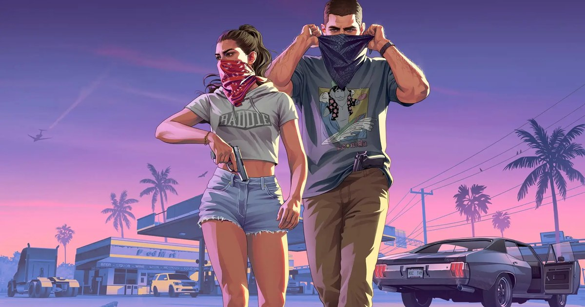

Rockstar shuts down the biggest unofficial GTA 6 PC port — and its 15-year-old creator just quit
Project Leonida, the open-source effort to get GTA 6's leaked Xbox build running on PC, is dead — its Discord server of nearly 179,000 members is gone, its GitHub is gone, and creator NotRexed says he's walking away. Rockstar has not publicly confirmed its role in the takedown.

Disclosure: this post contains affiliate links. I earn a commission on qualifying purchases.
The race to get GTA 6 running on PC without Rockstar just lost its frontrunner. Project Leonida — the open-source static recompilation project trying to bring the leaked Xbox build of Grand Theft Auto VI to Windows — is dead. Its Discord server disappeared, its GitHub repository became inaccessible, and its creator, NotRexed, announced he is stepping away from the project entirely.
It happened fast. Less than a day after Cyberleek released the missing Xbox executable that porting projects had been waiting on, Leonida's public platforms went dark. The project's Discord server, which had grown to nearly 179,000 members with around 74,000 users online at the time, vanished on the evening of November 23. Its GitHub repository — which had accumulated more than 34,000 stars — became inaccessible around the same time. A backup Discord server created to replace it was blocked as well, and an alternative Git host the team tried to migrate to stopped responding.
The creator is 15 — and he says Rockstar took the server down
NotRexed announced his departure on X shortly after the shutdown. "I quit guys. I'm sorry. I really want to make cool stuff, but every single time s*it happens that I can't control so I'm stepping away," he wrote, thanking the Discord community for the opportunity.
In a follow-up post, he clarified what happened — and who he is. Rockstar taking down the Discord server was only part of the reason he walked away, he said. "Like I've said before, I'm a 15-year-old kid. Managing school and sports is hard enough without having middle-aged men yell and complain to you on Discord. Goodbye." He also shared a screenshot of a Discord ban running until 2028.
One thing to be careful about: Rockstar and Take-Two have not publicly confirmed their involvement in the takedown. NotRexed has directly attributed the server's removal to Rockstar, and multiple outlets report the Discord and GitHub removals followed requests from Rockstar and Take-Two — but neither company has said so on the record. What is not in dispute is that the project's public platforms are gone and its creator is done.
How close did it get?
Closer than anyone expected, and still not close. In the hours after Cyberleek's executable release, Leonida's team reported the game had begun booting on Windows and reached the main menu — albeit with a black screen and audio interruptions, according to reports from the project. Other accounts were less generous: some machines just hit a black screen after booting.
That is still remarkable progress for a project that, by its own status page, had the game not booting at all before the executable arrived. Leonida's approach was static recompilation — translating the Xbox build's precompiled GPU programs and reimplementing its system software so the code runs natively on PC — the same technique NotRexed used for his native PC recompilation of the Switch 2 remake of The Legend of Zelda: Ocarina of Time. It never contained its own executable; users were expected to supply one from a legitimate copy of the game. Cyberleek's leak removed that requirement for anyone willing to download the files.
The port race isn't over — but the path just got harder
Leonida was the most prominent of the unofficial porting efforts, not the only one. Other projects are still trying to get the leaked build running on PC, and Take-Two is evidently watching: the speed of Leonida's removal suggests the publisher is monitoring these communities and able to get Discord to cooperate with takedown requests.
There is still no official PC version of GTA 6 announced, and no confirmed release date — reports have pointed to early 2027, a much shorter wait than Rockstar's usual year-plus gap between console and PC. Until then, the message from this week is blunt: the files are out there, the community can make real progress in hours, and Rockstar will move just as fast to shut it down.
Sources: Rockstar shuts down Discord server trying to make GTA 6 PC port (Dexerto) · Unofficial GTA 6 PC ports are already getting shut down (VGC) · Rockstar Shuts Down Discord Server Trying to Port GTA 6 to PC (Insider Gaming) · As GTA 6 PC port gets closer to becoming playable, Rockstar is reportedly taking action against modders and Discord communities (Notebookcheck) · GTA 6 PC Port Leonida Shuts Down as Creator Blames Rockstar (ShaneTheGamer)
Watch
Source: Grand Theft Auto VI Launch Trailer (Rockstar Games) — the official launch trailer, released October 15, 2026, 90 seconds of in-game footage captured on PS5, set to Justice's "Flower in a Hurricane."
Gear up: Razer — mice, keyboards, headsets and laptops.